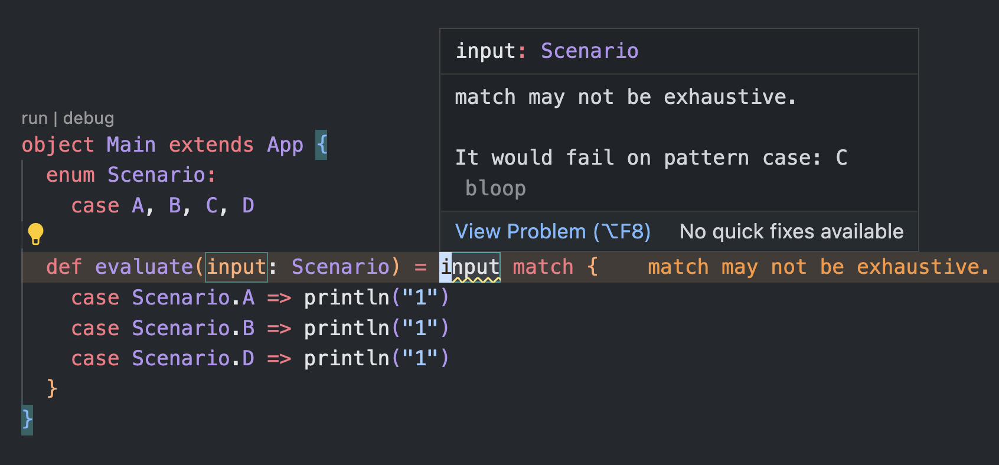

Last updated: 02 March 23Scala tips for Advent of Code 2022
scala
adventofcode
Twas the night before AOC
December is upon us 🎄🎅🏻🎄
The Advent of Code
Every December, I get excited about a project called the Advent of Code (AOC). Advent of code is a free-to-join daily coding puzzle project that starts on 1 Dec and concludes on the 25th. Each day a two-part question is released on the site to test your problem-solving skills. Many programmers all around the world enjoy solving these puzzles together in a variety of programming languages. This year, being my Year of Scala, it should come as no surprise that I plan on using Scala as my language of choice!
Amongst the many different programming languages used for AOC, I am always impressed by the mavericks who choose to use Excel 🤯

Scala Center’s Solutions for 2021
An amazing resource we have to prepare for this year’s AOC are the examples and solutions provided by Scala Center for last year’s AOC - Scala Center Solutions to 2021 Advent of Code. Here you can find a variety of solutions using solely Scala’s standard library and showcasing how to best use idiomatic Scala to solve common problems. In this post, I am going to share is a summary of my tips and takeaways.
1. Scala-cli: More time coding, less time fiddling
Among the many build tools available for Scala projects, my recommendation is scala-cli. Scala-cli is by far, the simplest tool that allows you to start solving the actual puzzles you will encounter and minimizes the time you fiddle with your project setup. You will find an easy-to-follow project structure here: https://github.com/scalacenter/scala-advent-of-code. You can install scala-cli via brew (see instructions on their website) or I typically rely on the default Coursier setup whose default bundle of packages includes scala-cli.
2. Case class - The swiss army knife of modelling a problem
How are AOC puzzles different from Leetcode? A: AOC puzzles are A LOT more verbose. Puzzles are usually described in a cute story incorporating a lot of storytelling elements which gives AOC its distinct Christmas-y flavour. But, this also means there’s just so much information to parse. One of my favourite features of Scala is the case class because it lends itself so well to converting the information from the question into clear and concise code.
case class Elf(name:String, age:Int) {
def isOldEnough:Boolean = { age >= 18}
}
val e1 = Elf("Alice",12)
val e2 = Elf("Bob",19)
val e3 = Elf("Alice",12)
// Comparison operators check for equality of data instead of the instance's memory location
e1 == e3 // True
// Case classes can hold methods just like a regular class
e2.isOldEnough // True3. Be explicit when using Mutability
Scala has a strong sense of pragmatism. Scala encourages immutability as a default, which makes sense as it reduces a lot of unexpected side effects. But, Scala also does not force immutability on you in every circumstance. To use a mutable data structure, you can import like so.
import scala.collection.mutable
// A mutable map with key (x,y) --> value
var map = mutable.Map[Tuple2[Int,Int], Int]()
// Initialising the map
map((0,0)) = 0
map((0,1)) = 0
map((1,0)) = 0
map // HashMap((0, 0) -> 0, (1, 0) -> 0, (0, 1) -> 0)
// Updating values in the Map
map((0,0)) += 1
map // HashMap((0, 0) -> 1, (1, 0) -> 0, (0, 1) -> 0)Keeping track of a map of (x,y) coordinates that correspond to a value that can change as the problem progresses is a rather common problem you will encounter. While I am sure you can still solve this problem using immutable data structures, I am glad that an option to use mutability exists. I also enjoy explicitly declaring which data structures are mutable because it reminds me to keep mutability to a minimum.
4. Use Recursion in place of repetition
In Scala, the recommendation is to use recursion in places where we need repetition. However, refactoring while loops to a recursive function used to be unintuitive for me, until I came across @Kit Langton’s video.
Once you get a hang of recursion, a lot of solutions that require you to repeat actions while waiting for a condition get a lot simpler to understand. A classic example is a search algorithm which comes up fairly often in AOC.
case class Point(row:Int, col:Int)
@scala.annotation.tailrec
def search(
visited: Set[Point],
toVisit: mutable.Queue[Point],
qualifiedPoints: Set[Point]
) = {
if toVisit.isEmpty then qualifiedPoints
else {
val nextPoint = toVisit.dequeue
val newPointsToVisit = ...
search(
visited ++ Set(nextPoint),
toVisit ++ newPointsToVisit,
qualifiedPoints ++ Set(nextPoint))
}
}5. Pattern matching - Exhaustively check for all paths your code can take
Pattern matching in Scala is incredibly expressive and I can’t do justice to this amazing feature in a single paragraph. If you are new to Scala, be sure to learn the various ways you can pattern match from the Scala official website. Specific to the puzzles in AOC, 1 thing I love about pattern matching is that the compiler will exhaustively check for every path my code execution can take and alert me if I missed something (which happens rather often). 
6. Use Try for elegant error handling
If you have many actions to run and some of which might throw an error, you can handle this situation elegantly by wrapping the actions in a Try. This converts the output to either a Success or Failure type that you can simply filter on.
Conclusion
And, there you go! Hope these were useful tips and that I got you excited to try them out for 2022’s Advent of Code. Happy coding!
Appendix
Somewhere, something incredible is waiting to be known -- Carl Sagan
Reuse
Citation
BibTeX citation:
@online{tan2022,
author = {Daniel Tan},
title = {Scala Tips for {Advent} of {Code} 2022},
date = {2022-11-30},
url = {https://www.ddanieltan.com/posts/aocScala},
langid = {en}
}
For attribution, please cite this work as:
Daniel Tan. 2022. “Scala Tips for Advent of Code 2022.”
November 30, 2022. https://www.ddanieltan.com/posts/aocScala.